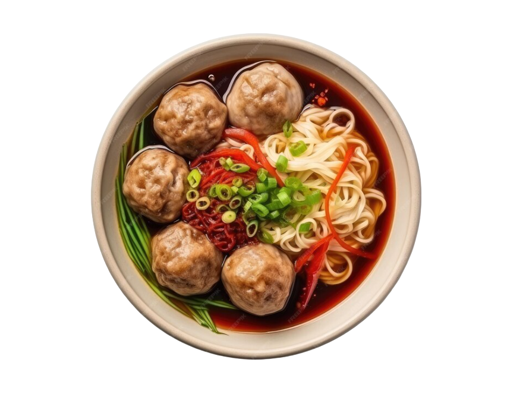

Kuliner Binjai
Selamat datang di situs resmi Kuliner Binjai! Kami hadir untuk mengajak Anda menjelajahi kekayaan kuliner yang ada di kota kami. Binjai, yang dikenal sebagai Kota Rambutan, tidak hanya terkenal dengan buah rambutannya yang manis, tetapi juga dengan beragam hidangan lezat yang siap memanjakan lidah Anda..